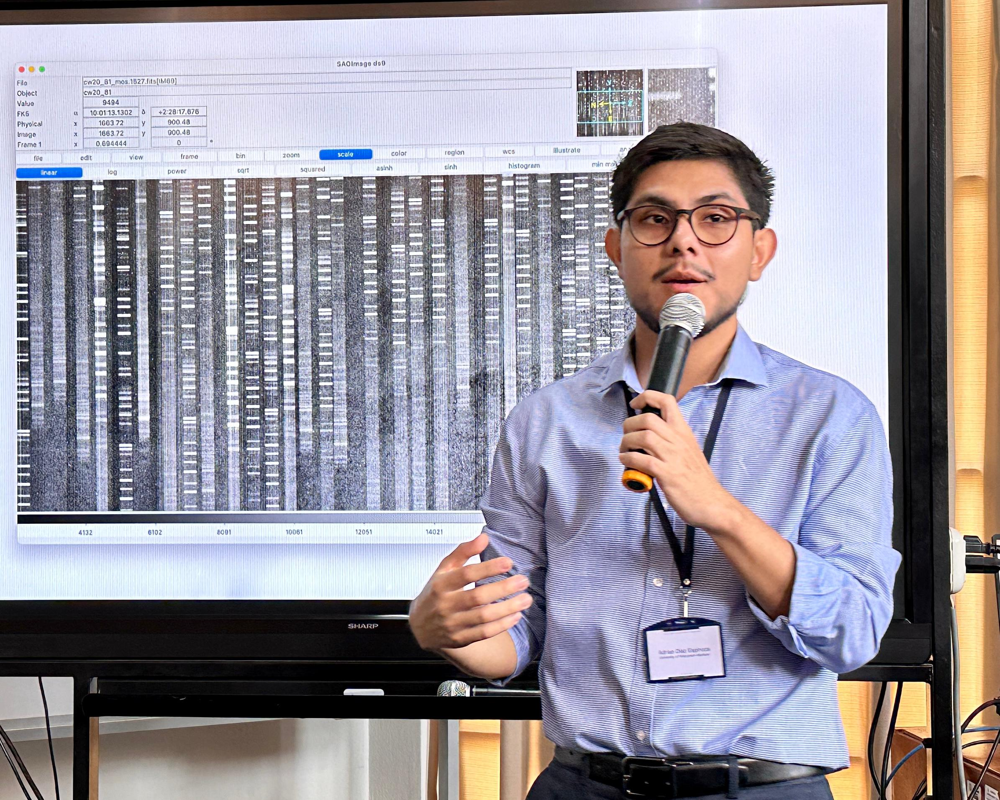
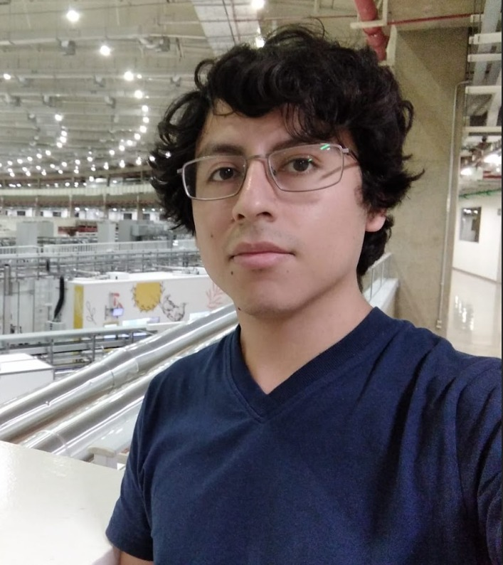
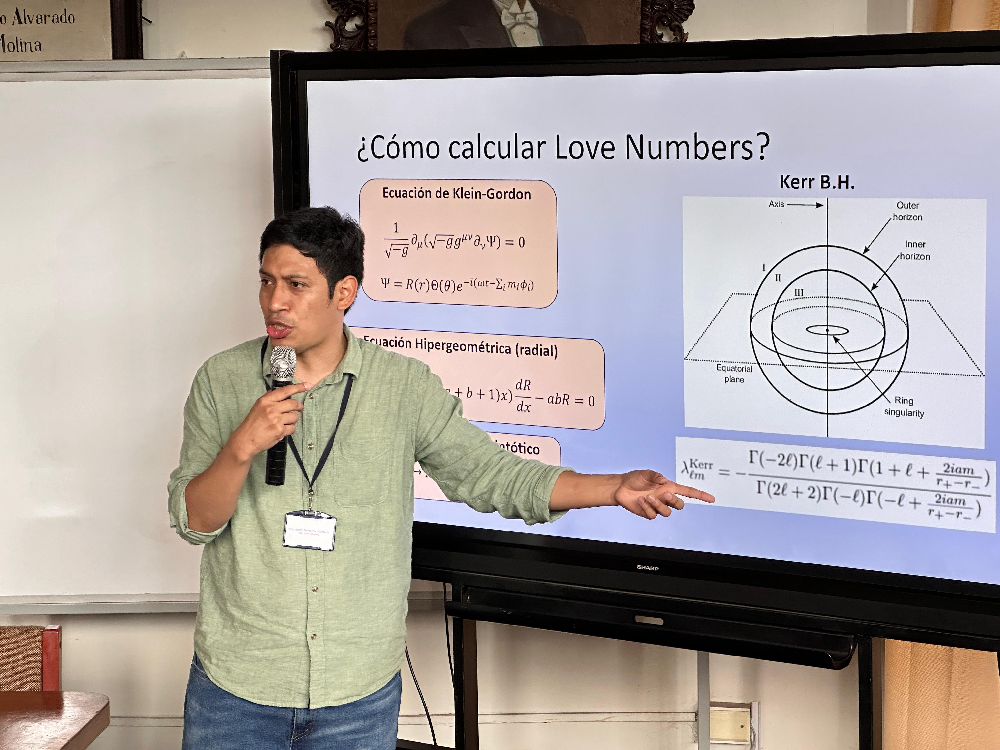
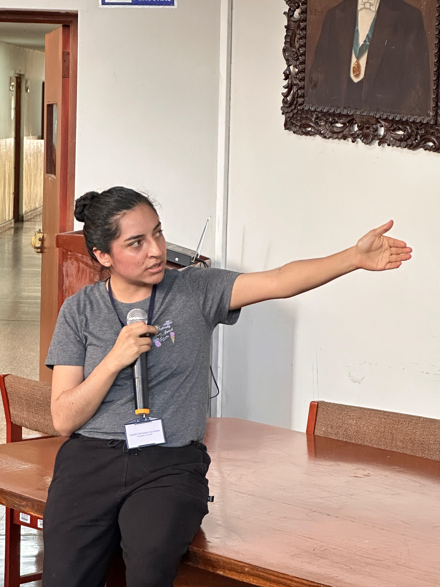
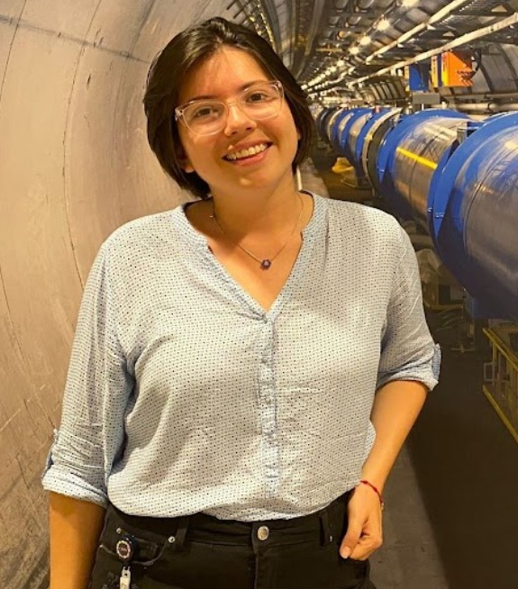
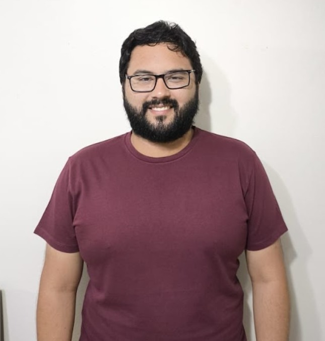

David Céspedes
ESTUDIANTE DE DOCTORADO, UNIVERSITY OF HOUSTON
"Introducción a ETH (Eigenstate Thermalization Hypothesis)"
Un Encuentro para la Ciencia y el Futuro
La Reunión Internacional de Físicos en Posgrado (RIFP) es el principal punto de encuentro para la comunidad científica peruana. Conectamos a estudiantes, académicos e investigadores de todo el mundo para compartir los últimos avances, fomentar la colaboración e inspirar a las nuevas generaciones de físicos.
Galería del Evento


- 
- 
- 
- 
- 
- 
Nuestros Ponentes
Fernando Temoche
ESTUDIANTE DE DOCTORADO, UTAH STATE UNIVERSITY
"Love Numbers y Agujeros Negros en 5 Dimensiones"
Adrian Diaz
ESTUDIANTE DE DOCTORADO, UNIVERSITY OF WISCONSIN
"¿De verdad conocemos el Universo Lejano? Redefiniendo Nuestra Comprensión de las Galaxias desde el Infrarrojo"
Andrés Argandoña
ESTUDIANTE DE DOCTORADO, UNIVERSIDAD AUTÓNOMA DE MÉXICO
"Entropía de Entrelazamiento Holográfico para Branas de Prueba: Un ejemplo concreto"
Renzo Franco
ESTUDIANTE DE MAESTRÍA, UNIVERSIDAD DE SAO PAULO
"Entre Aislantes y Conductores: El Papel de la Topología en la Física de la Materia Condensada"
David Hinostroza
ESTUDIANTE DE MAESTRÍA, UNIVERSIDAD DE SAO PAULO
"Defectos y el Transporte en Materiales Topológicos"
Lisseth Gonzales
ESTUDIANTE DE MAESTRÍA, WESLEYAN UNIVERSITY
"Búsqueda de la Línea de Absorción de Hα en la Atmósfera Extendida de TOI 1288b"
Lucia Coll
ESTUDIANTE DE DOCTORADO, DESY UNI HAMBURG
"Búsqueda de Partículas de Larga Vida en el LHC"
Mario Solis
ESTUDIANTE DE DOCTORADO, INSTITUTO BALSEIRO
"Los Non-Fermi Liquids y la Superconductividad: Persiguiendo a los Superconductores de altas temperaturas"
Rivaldo Duran
ASTRONAUTA ANÁLOGO, INSTITUTO POLITÉCNICO NACIONAL
"Vámonos a Marte para salvar la Tierra: Un enfoque desde la Dinámica de Fluidos Computacionales"